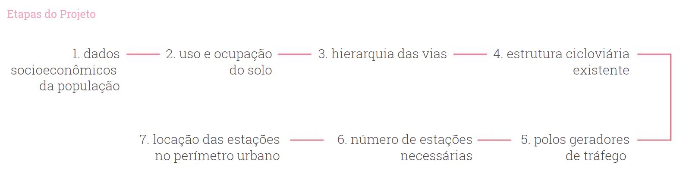
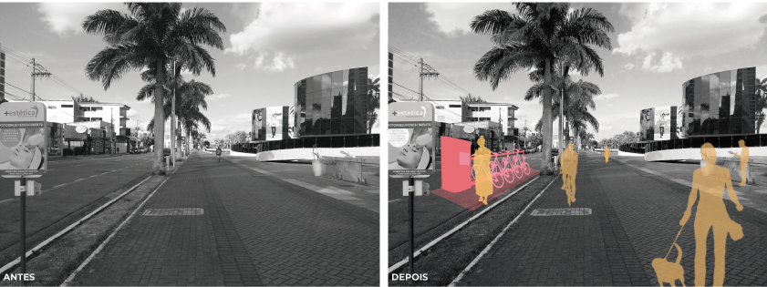

©2017 LabRua
Template: Bootstrapious
+ Kishan B

Bicicleta Compartilhada
Para atender as demandas no Plano de Mobilidade Urbana do município de Campina Grande, pesquisadores do LabRua foram convidados pela STTP (Superintendência de Trânsito e Transportes Públicos) a estudar e construir um diagnóstico de viabilidade de implantação do sistema de Bike Share (bicicleta compartilhada) e apontar em sua fase inicial, a localidade das estações.
Atualmente, novas empresas têm apostado em transportes ativos, sendo um deles a bicicleta, como meio para atender as necessidades de transporte nas áreas urbanas. Os programas de compartilhamento de bicicletas, públicos ou privados, mudam a maneira como enxergamos esse veículo: de opção de lazer à meio de transporte e até mesmo instrumento de trabalho. Cidades no mundo todo têm implantado o sistema de bicicletas compartilhadas, entre elas, cidades brasileiras, o que ajuda a promover a bicicleta como opção acessível e valiosa de transporte.
A natureza dos sistemas de compartilhamento é permitir que qualquer pessoa possa retirar e devolver a bicicleta em qualquer local que contenha uma estação, assim, proporcionando o transporte ponto-a-ponto. Como não existe um modelo único para a implantação do sistema, cada cidade molda sua necessidade e adapta o sistema ao contexto local, levando em conta suas características específicas em relação à, por exemplo, densidade, topografia, clima, infraestrutura e a cultura da cidade.
Importante compreender o perfil de quem pedala e como está sendo feito o uso da bicicleta em Campina Grande, para tanto, foi imprescindível analisar o Diagnóstico do Uso da Bicicleta, em que, tomou-se como base para realização da proposta inicial do sistema, pois, o exame dos dados nos permitiu visualizar um retrato do prática e traçar quais são as tendências de crescimento quanto a utilização do modal.
Etapas do projeto

LabRua, 2020.
Ao analisar todos os dados levantados foi possível identificar uma área para análise de cobertura, no qual, constitui o local de implantação para a primeira fase do sistema, sendo essa área bairros centrais que apresentam uma dinâmica que favorece o uso do modal bicicleta. Abaixo tem-se a fase inicial da proposta de implantação do sistema.
Estações propostas

LabRua, 2020.
Sistemas de compartilhamento de bicicleta têm a capacidade de abranger seu uso principalmente para pessoas que tem o interesse em tornar-se novos(as) usuários(as) deste modal, em que facilita o acesso do meio para vários grupos de pessoas. O sistema têm se mostrado uma ferramenta importante de integração ao sistema cicloviário em cidades em todo o mundo, assim como, busca também a integração com outros meios de transporte público, sendo um fator fundamental para a produção de cidades equitativas e sustentáveis.
Propostas de intervenção

LabRua, 2020.
Análises produzidas nessa pesquisa
- Dados socioeconômicos da população
- Densidade populacional
- Topografia
- Hierarquia das vias
- Estrutura cicloviária existente
- Polos geradores de tráfego
- Identificação da área de cobertura para implantação
- Uso e ocupação do solo da área de cobertura
.